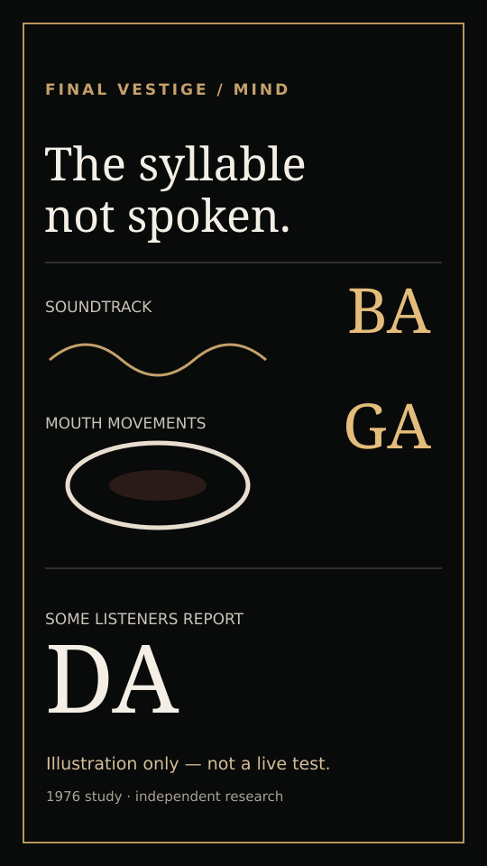

An exercise in hearing what is there
In 1976, researchers dubbed the sound ba over film of a face forming ga. Some people reported hearing a third syllable. The soundtrack had not changed. The result became known as the McGurk effect, an especially useful reminder that a genuine experience and a correct explanation of its cause are not the same thing. McGurk and MacDonald, Nature.
This matters when evaluating audio marketed for meditation. It is perfectly reasonable to enjoy a sound, find it easier to settle into a routine with a recording, or prefer a guide who speaks aloud. None of those experiences, however, proves the commercial audio changes brainwaves in a specific way, treats anxiety, or provides an hour's meditation benefits in twelve minutes.
Zen12 is an Inspire3 audio program built around twelve-minute sessions and multiple listening styles. The publisher advertises more ambitious effects. We can report what is included and weigh available research without repeating those promises as our findings.
This guide is not a firsthand product review. Final Vestige has not purchased, downloaded, inspected, listened to, or clinically tested the Zen12 MP3 library. We examined publicly available seller materials and independent literature. The distinction is important.
The problem the product is designed to answer
Three barriers recur in the seller's own copy: feeling too busy for lengthy practice, difficulty staying with one's attention, and a preference for guided or sensory structure over silent sitting. These are plausible motivations to seek a recording. They do not establish that a paid recording is necessary or that all buyers will benefit.
A twelve-minute session is short enough to be placed on a calendar. For someone who dislikes open-ended meditation, a defined beginning and end can be appealing. The main practical offer is structure: a repeatable session length, organized levels, and a choice of listening format. Those features are comprehensible independently of any speculative neurological mechanism.
Our conservative audience match is not “anyone who wants to reprogram their brain.” It is someone who has already decided to explore audio-guided quiet time and wants to compare a structured paid library with free guided practices, a timer or their existing Fieldbook. Someone seeking treatment for psychological or medical symptoms needs qualified care, not an affiliate landing page.
Precisely what the seller lists
The seller's current public offer at Zen12's product page describes twelve levels that can be used over time. Each level is presented in four styles: relaxation music, guided meditation, nature sounds and white noise. The site advertises downloadable MP3 recordings with user guidance. The package table below repeats the merchant's stated contents; these audio files have not been independently counted.
| Package | Advertised included levels | Advertised MP3 count | Sensible preliminary question |
|---|---|---|---|
| Beginner | First six levels | 24 | Do I want to try only the opening half? |
| Premium | All twelve levels | 48 | Do I genuinely expect to want a complete library? |
| Advanced | Final six levels | 24 | Have I already developed my own practice and checked what the last six levels contain? |
The Advanced tier is not simply a smaller “better” bundle. It omits the first six levels according to the sales page. A beginner should not infer that “Advanced” means a more effective version of the same starting experience. Premium's extra files may be useful to a committed listener; a larger file count, however, does not prove stronger meditation outcomes.
The seller also advertises guides, bonus materials and support. Some extras differ by tier. Descriptions of bonuses, support and access are marketing specifications until tested against the current checkout and terms. We do not assign the bonuses independent monetary value.
Four sound choices are not four proven therapies
Guided meditation may suit someone who wants spoken instructions. Relaxation music may suit someone who prefers an atmosphere without a narrator. Nature sounds may be useful to someone who enjoys outdoor ambience. White noise may appeal to someone who prefers consistent background sound.
Those are preferences, not medical indications. There is no basis to claim white noise will treat ADHD, guided audio will reverse insomnia, or music will create an objectively superior “brainwave state.” The seller advertises the styles as part of the product; we have not personally verified sound quality, file integrity, narration, language accessibility or whether a particular device will play all files without issue.
A practical decision: use a free guided timer for a week before paying for a library. If you dislike daily audio structure, buying more recordings will not automatically change that preference.
What the brainwave claim does—and does not—have behind it
Zen12's sales page says sound pulses influence the brain's electrical rhythms and can bring about deep meditation with little effort. It goes further: it equates a twelve-minute audio session with an hour of meditation. Those are seller efficacy claims, not findings verified here.
A 2023 systematic review in PLOS ONE examined fourteen studies of EEG changes during binaural-beat stimulation. Five findings were in line with the entrainment hypothesis, eight contradicted it, and one was mixed. The researchers emphasized heterogeneous methods and inconsistent results. Read the independent systematic review.
That paper did not test Zen12. It also cannot answer whether a particular Zen12 recording improves someone's attention, reduces anxiety or equals a longer meditation session. Studies of meditation in general are not the same as controlled trials of this commercial product.
The exact distinction is crucial: a mechanism can be plausible without being established; an effect in one laboratory recording does not transfer automatically to another recording; and an improvement someone reports after a listening session may depend on expectation, context, practice or other factors. We do not know which factors dominate for Zen12.
There is another important boundary. The McGurk effect concerns audiovisual speech. It has no direct bearing on whether a frequency-based meditation program can alter EEG rhythms. We connect the two only to illustrate how carefully independent evidence must be interpreted.
Test the habit for free before testing a purchase
Here is a twelve-minute routine that requires no proprietary audio, data collection or purchase:
- Minute 0–2: Sit somewhere safe, set a twelve-minute timer, and write a single word for how alert you feel. There is no correct starting state.
- Minute 2–5: Notice sounds as they arise. Do not try to force silence; mentally label “sound” and return to listening.
- Minute 5–9: Shift attention to the feeling of breathing or to a neutral object in front of you. When distracted, return without grading yourself.
- Minute 9–11: Notice what changed, if anything. Feeling restless is an observation, not a failed session.
- Minute 11–12: Note whether this short structure is convenient enough to repeat. If tracking, use only your own private notes.
Repeat on three ordinary days. Ask: did I make room for this? Did I prefer a spoken guide? Would nature sounds make it more pleasant? Did I want to continue? Avoid measuring yourself by mythical “deep state” scores. One person's quiet routine cannot determine clinical outcomes or authenticate brainwave claims.
The existing Seven Day Focus Fieldbook offers another free route to reflection. It is Final Vestige's existing published resource and Jetpack subscription path; this guide does not ask readers to join another list.
What I'd check before I paid
Contents and format. Ask whether your device supports downloadable MP3 files, whether you will need to manage storage, whether all four styles matter to you, and whether you really want sequential levels. Confirm the current file list directly with the seller.
Evidence. A product description that calls a procedure scientifically proven does not itself provide a product-specific controlled outcome trial. Request studies of the finished program, with outcomes relevant to your goal, if your buying decision depends on measurable benefits.
Checkout and personal information. The public Premium checkout shows fields for name, email, postal details and a mobile phone number. The presence of the phone field does not establish whether it is mandatory. Final Vestige has not submitted payment or tested the form. Read the current privacy policy before submitting anything.
Costs. The sales page and checkout display offers and a countdown. Prices, discounts, tax treatment and urgency messaging can change and should be evaluated on the seller's current page. This evergreen guide deliberately does not reproduce an amount, imply a special Final Vestige price or suggest the timer proves scarcity.
Refunds and support. The seller advertises a one-year refund promise and lifetime support. Those are the merchant's representations. We have not made a purchase, filed a refund, tested support, or verified how exclusions, timelines or cross-border transactions work. Read the actual contract before relying on the guarantee.
Safety and accessibility. Listen only in a safe context, never while driving or handling dangerous equipment; the seller itself gives that warning. Consider whether you need transcripts, a narrator, offline use, reliable volume control or a non-audio alternative. If you have concerns about symptoms, seek appropriate qualified advice; this is not treatment guidance.
Evidence of experience. Seller testimonials may describe genuine opinions but do not establish what a typical purchaser will achieve. Final Vestige offers no testimonial and has no direct use experience to report.
The three real objections
“Why shouldn't I just use free audio?” You can. Free guided sessions, a simple timer, and your own twelve-minute routine might satisfy the same practical need. A paid library can offer organization and variety, but not a scientifically verified shortcut on the evidence reviewed.
“Do I need the biggest package?” Not necessarily. Start by deciding whether you like the format and how much of the advertised library you expect to use. Do not choose Advanced merely because the name suggests a more powerful effect.
“If I don't feel anything, am I doing it wrong?” Not on the basis of this guide. Experiences vary and the product's efficacy claims remain unsupported by independent product-specific studies reviewed here. A no-change result should be allowed to remain a no-change result.
What does an informed decision look like?
If your aim is to create a regular quiet-time ritual and you value a neatly organized audio library with multiple formats, Zen12's advertised features may be relevant. If your main reason to buy is a guaranteed neurological effect, rapid relief of illness, or the promise that twelve minutes equals sixty, the evidence reviewed does not justify that expectation.
You can review the exact merchant product description and its About explanation as seller sources. These are ordinary, non-affiliate citations that leave Final Vestige and may contain links to checkout; they are not an approved commercial recommendation or earning link. They are provided to let a reader inspect the claims being evaluated.
Future affiliate disclosure, shown beside the inactive action: If you purchase through a future approved affiliate link, Final Vestige may earn a commission at no additional cost to you. No such earning link is active on this draft page.
Commercial action: Merchant link withheld — Final Vestige-specific affiliate acceptance, permitted channel and authorized tier-specific tracking link are not verified. No one can complete a purchase using this draft's call to action.
You do not need to subscribe or purchase anything to use the free exercise, check the sources, or read the Puységur evidence archive. That is the point of keeping an independent archive separate from its optional commercial evaluations.

Read the film transcript and timed captions
- You heard a syllable. But what did the soundtrack contain?
- In 1976, a voice said BA while a film showed lips forming GA.
- Some listeners reported DA. The audio was still BA.
- Not everyone hears the same thing. The clip and question matter.
- Perception is evidence of an experience—not proof of every proposed explanation.
- Ask what the original study tested. Read the sources. Final Vestige.
No third-party film or seller footage is used. The illustration is not a test stimulus.
Prepared 1 November 2026. Merchant specification citations link to the seller and can lead to checkout; they are presented strictly as source evidence, not approved earning links. No new subscription box, analytics collector, hidden iframe or automatic media playback.